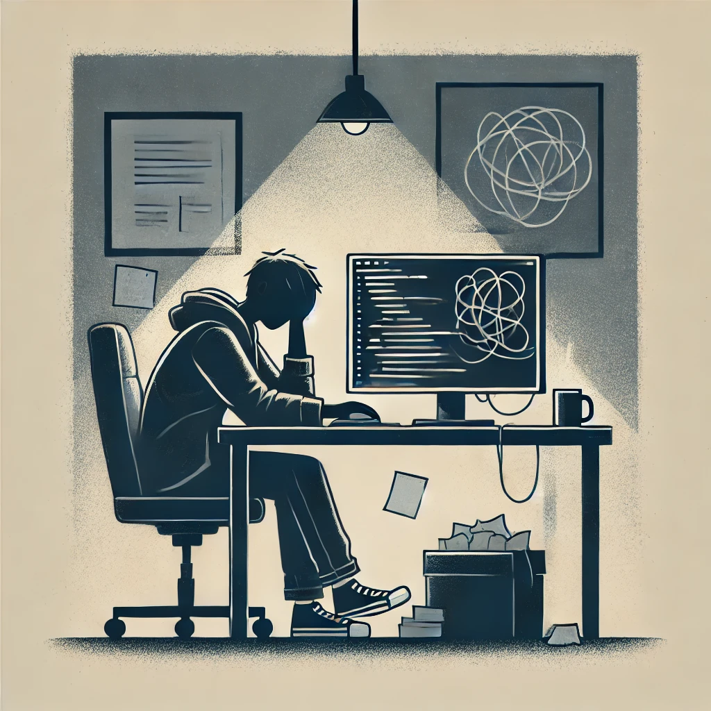

A developer's job's fast-paced and demanding nature can often take a toll on mental health. With looming deadlines, long coding sessions, and the pressure to stay updated with ever-evolving technologies, it's important to adopt strategies to maintain mental well-being. Here are practical tips to help developers remain mentally healthy:
1.Set Boundaries Between Work and Personal Life
Why It Matters
The ability to work from anywhere has blurred the lines between professional and personal life for many developers.
Tips
- Stick to a schedule: Set clear working hours and avoid extending them unless necessary.
- Designate a workspace: If you work from home, create a dedicated workspace to separate work from relaxation areas.
- Unplug after work: Turn off notifications and resist the urge to check emails or code during personal time.
2.Take Regular Breaks
Why It Matters
Continuous hours of coding can lead to burnout and reduced productivity.
Tips
- Follow the Pomodoro Technique: Work for 25 minutes and take a 5-minute break.
- Step outside: Fresh air and sunlight can boost your mood and refresh your mind.
- Engage in mindful activities: Use break time for activities like stretching, meditating, or deep breathing.
3.Quick Cooking Options
Why It Matters
Physical health and mental health are closely connected. Regular exercise reduces stress and improves focus.
Tips
- Incorporate movement into your day: Stand up and stretch every hour.
- Exercise regularly: Aim for at least 30 minutes of physical activity most days of the week.
- Try desk exercises: Simple exercises like neck stretches or seated leg raises can be done while working.
4.Build a Supportive Network
Why It Matters
Isolation can increase stress and anxiety, especially for remote developers.
Tips
- Stay connected: Regular communicate with colleagues, friends, and family.
- Join developer communities: Participate in forums, meetups, or online groups to connect with peers.
- Seek mentorship: A mentor can provide guidance and support in navigating challenges.
5.Prioritize Sleep
Why It Matters
Sleep is essential for mental clarity, problem-solving, and emotional regulation.
Tips
- Maintain a consistance sleep schedule: Go to bed and wake up at the same time every day.
- Create a bedtime routine: Activities like reading or listening to calming music can help signal your brain to wind down.
- Limit screen time before bed: Blue light from devices can interfere with your sleep quality.
6.Learn to Manage Stress
Why It Matters
High levels of stress can lead to burnout and decreased productivity.
Tips
- Practice mindfulness: Techniques like meditation and yoga can help manage stress.
- Break tasks into smaller steps: Tackling one step at a time can make large projects less overwhelming.
- Recognize your limits: Don't hesitate to delegate tasks or ask for help when needed.
7.Keep Learning, But Avoid Overloading
Why It Matters
The tech industry evolves rapidly, and staying updated is important—but overloading yourself can be counterproductive.
Tips
- Set realistic goals: Focus on one or two skills at a time rather than trying to learn everything.
- Schedule learning time: Allocate specific times for professional development.
- Celebrate progress: Acknowledge and reward yourself for milestones, no matter how small.
8.Seek Professional Help When Needed
Why It Matters
Sometimes, professional guidance is necessary to address mental health challenges effectively.
Tips
- Talk to a therapist: A mental health professional can provide strategies tailored to your needs.
- Utilize company resources: Many organizations offer employee assistance programs (EAPs).
- Join support groups: Sharing experiences with others facing similar challenges can be empowering.
Maintaining mental health is a continuous process that requires intentional effort. By integrating these practices into your daily routine, you can enhance your well-being, boost productivity, and enjoy a more fulfilling career as a developer.
